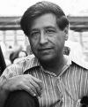

César Chávez (1927–1993) bir sendikacı ve yurttaşlık hakları aktivistidir. 1960’larda ve 1970’lerde kamuoyunun dikkatini göçmen tarım işçilerine çekmek için açlık grevleri yapmış, boykotlar düzenlemiştir. Kurduğu United Farm Workers (Birleşik Tarım İşçileri / UFW) isimli sendika toprak sahiplerini sonunda daha fazla ücret ödemeye ikna etmiştir. Chavez aynı zamanda Meksika kökenli Amerikalı tarım işçilerinin zararlı böcek ilaçlarına maruz kalmasını engellemek için de çalışmıştır.

Chavez, Arizona’da doğmuştu. Henüz genç bir delikanlıyken çiftliklerde çalışmaya başladı. II. Dünya Savaşı’nın ardından donanmaya katıldı. 1948 yılında ABD’ye döndü. 1950’ler boyunca Kaliforniya seçmenlerinin kayıt işlemleriyle ilgilendi. UFM’nin öncülü olan National Farm Workers Association’ın (Ulusal Tarım İşçileri Derneği) kurucuları arasında yer aldı.
Güney’de yurttaşlık hareketi gitgide güç kazanırken Chavez’in UFW kampanyası hem toplumsal hem de ekonomik hedefler güdüyordu. Meksikalı tarım işçilerinin maaşlarını yükseltme ve tehlikeli çalışma koşullarının düzeltilmesi mücadelesinin yanı sıra on yıllardır kötü muamele gören işçilerin kırılan gururlarının tamir edilmesi için de uğraştı.
Chavez’in en önemli kampanyası olan üzüm boykotu 1967 yılında başladı. Tüketicileri, çiftlik sahipleri sendikayı tanıyana kadar Kaliforniya üzümleri satın almamaya davet etti. Robert F. Kennedy (1925–1968) gibi politikacılardan büyük destek gördü. Kârları düşen çiftçiler en sonunda 1970 yılında sendika ile sözleşme imzalamak zorunda kaldı.
1980’lerin başında pek çok çiftçi sendikadan kurtulmanın yollarını aradı. Chavez’in UFM’de otokratik bir yönetim kurduğu yönünde eleştiriler dile getirilmeye başlandı. Büyük bir ün kazanmasına rağmen Chavez’in sendikası bütün tarım işçilerini örgütleyemedi. Tarım işçilerinin büyük bölümü halen sendikasızdır.
Tüm bunlara rağmen, altmış altı yaşında öldüğü sırada Meksika kökenli Amerikalıların kahramanı konumundaydı. Doğum günü “31 Mart” pek çok eyalette bayram olarak kutlanmaktadır.
Ek Bilgiler
1- Los Angeles Times, 1995 yılında FBI’da Chavez’le ilgili 1434 sayfalık bir dosya bulunduğunu açıkladı. Anlaşılan faaliyetleri “tehdit” olarak algılanmıştı.
2- Chavez’in en bilinen sloganlarından biri olan “Sí, se puede,”—“Yes, we can,” (Evet, yapabiliriz.) 2008 yılında Demokrat Parti başkan adayı Barack Obama (1961–) tarafından benimsenmiştir.
3- Chavez’in sekizinci sınıfta okuldan ayrılmadan önce otuz sekiz ayrı okula kayıt yaptırdığı söylenmektedir.